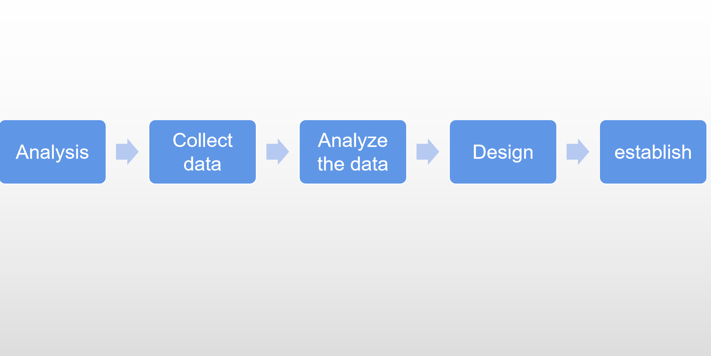
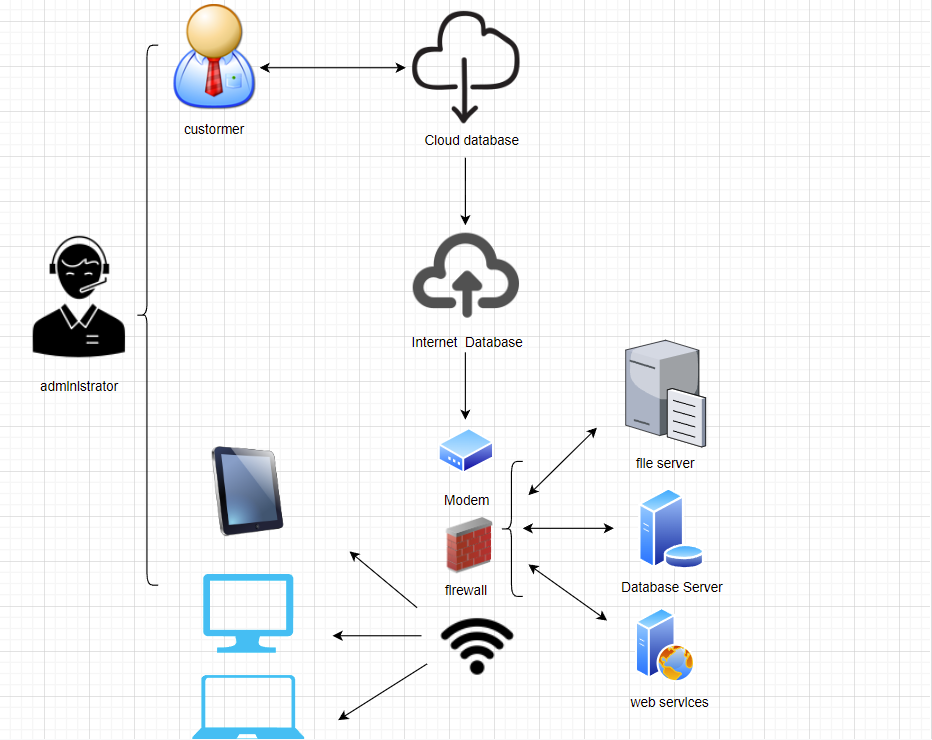

 
hardware
1.The tablet 2.Laptop computer 3.Desktop computer
software
1.File server 2.Database server 3.Web services
The values and methods of creating web pages
Efficient information communication can bring convenience. The Internet is an information exchange system which is not limited by time and space, and it is the most direct, richest and fastest way of contact at present. Can effectively increase the amount of information, cansave operating costs, can make information spread and update faster, can facilitate the network of business, user management. It can also improve the competitiveness of the market, but also improve efficiency, can let more people know, but also can establish more and more relationships, so creating a web page has great benefits, but also has a very important value.